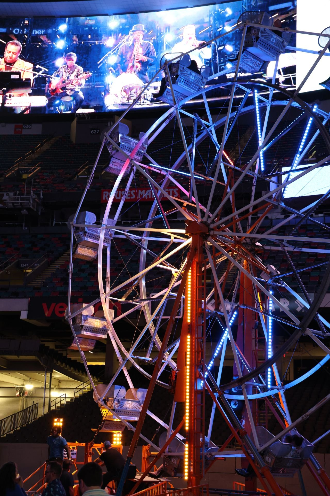
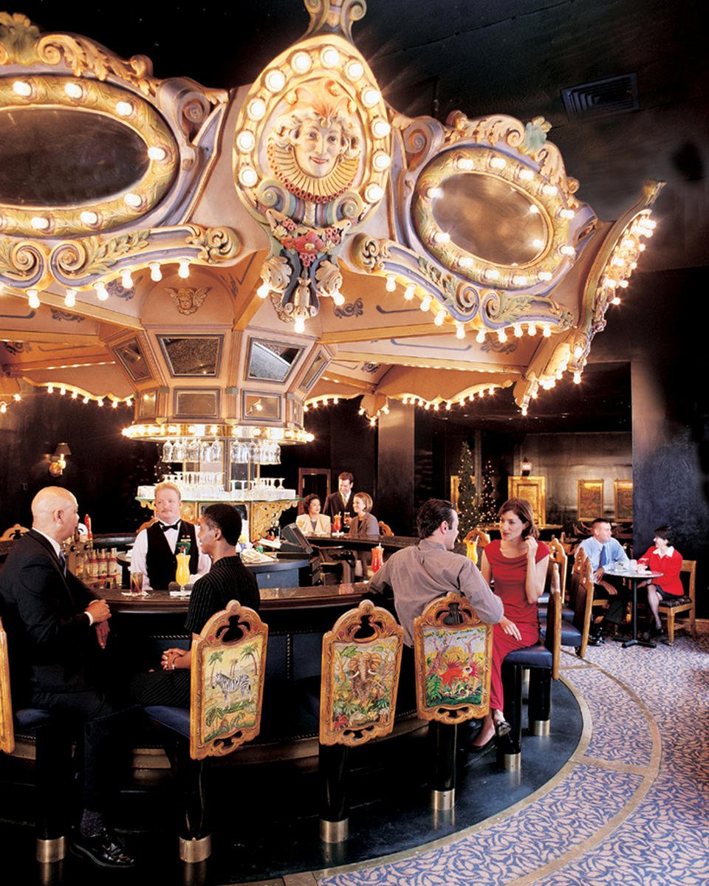

The conference content was solid this year. But if you've been to enough of these, you know the real value happens after the keynotes wrap.
NARPM Broker/Owner 2026 was no exception. It helps that the host city was New Orleans. Few places in the country do "bring people together" quite like it (Creole heritage, historic architecture, Mardi Gras, Jazz Fest). That energy doesn't stop when the conference badges come off. It carries straight into the after-hours, and each of these three events leaned into a different piece of it.
Three after-parties stood out (including one I co-hosted, which I'll get to). Here they are, in order:
1. The Superdome Party (SecondNature + DoorLoop)

2. The Sunset Jazz Cruise (Crane)
This was ours. Wolfgang Croskey and I hosted it through Crane, and 130+ people came out.
We kicked it off with a parade through the streets (full marching band, dancers in Mardi Gras colors) and walked everyone over to the City of New Orleans Riverboat. (Fun fact: that boat was originally built in 1995 as a floating casino before becoming a sightseeing vessel.)
Once we were on the river, it was exactly what you'd want: skyline views, live jazz, a relaxed crowd, and enough room for actual conversations. Cruising the Mississippi at sunset is a hard backdrop to beat.
If you weren't there, you missed a good one! Check out the sizzle reel here. (Crane members — we'll do this again.)

3. The Carousel Bar (AppFolio)

The thing about all three of these:
they each leaned into something different. Spectacle at the Superdome. Music and movement on the river. Quiet conversations at the Carousel Bar. New Orleans is one of the few cities where you can pull off all three in the same week without any of it feeling forced.
A reminder, too, of why we keep showing up to these things. The sessions are valuable, the expo floor is useful, but the real reason to fly across the country and stay in an overpriced hotel is to be in the same room (or stadium, or riverboat, or French Quarter bar) as the people building this industry alongside you. That's what these after-parties were really about.
Already looking forward to next year.
—Peter
Financial Interest Disclosure: NARPM comp’d a Press Pass to the 2026 Broker/Owner conference for a reporter covering the event for me. None of the companies mentioned in this article provided any compensation or incentive for this article or the conference coverage. I’m a consultant for AppFolio. AppFolio, DoorLoop, and Second Nature have all sponsored my podcast and/or newsletter.